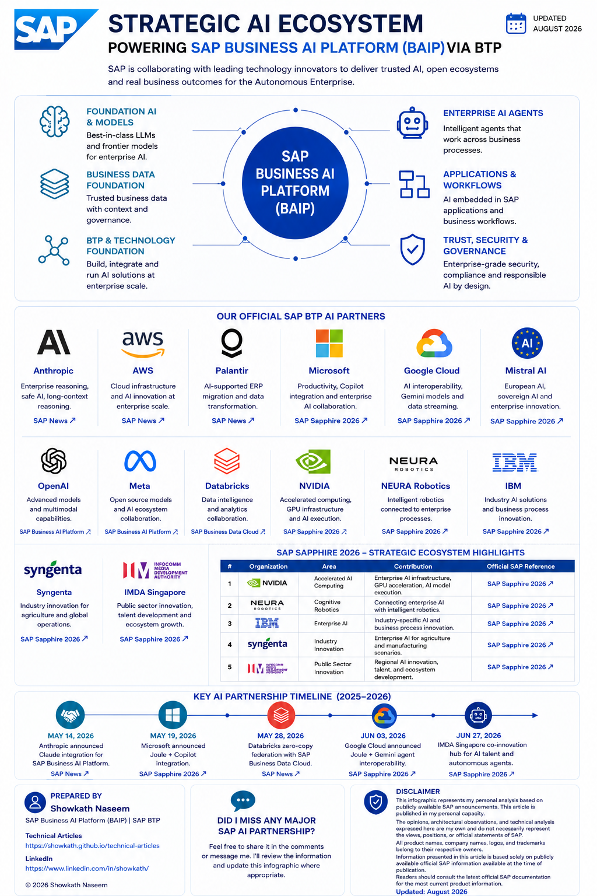

Model Choice
Enterprise AI needs multiple foundation models, not one winner. Flexibility supports reasoning, sovereignty, cost, and industry fit.
Author: Showkath Naseem | SAP Principal Architect
Last Updated: August 2026
| Topic | Official Reference |
|---|---|
| SAP Business AI Platform | Product Page |
| Anthropic Claude Integration | SAP News |
| AWS AI Co-Innovation | SAP News |
| Palantir Partnership | SAP News |
| SAP Sapphire 2026 | SAP News |
Published: August 2026
Status: Based on publicly available official SAP information
Updates: Content reflects SAP announcements current as of publication date
This article is published in my personal capacity. The opinions, architectural observations, and technical analysis expressed here are my own and do not necessarily represent the views, positions, or official statements of SAP.
All product names, company names, logos, and trademarks belong to their respective owners.
Information presented in this article is based solely on publicly available official SAP information available at the time of publication.
Readers should consult the latest official SAP documentation and SAP News for the most current product information.
A boardroom-style visual summary for readers who want the main message before the full article.

Enterprise AI is no longer built from a single technology stack. It requires business applications, trusted enterprise data, foundation AI models, cloud infrastructure, security, governance, and integration working together as one platform.
SAP Business AI Platform brings these capabilities together to provide an enterprise AI foundation that enables organizations to develop, integrate and operate AI agents, business applications and intelligent workflows.
Rather than treating AI as a standalone assistant, SAP positions AI directly inside business processes where decisions, automation and enterprise data already exist.
SAP Business AI Platform combines multiple enterprise capabilities instead of relying on a single AI model. Each capability contributes to building trusted enterprise AI that can operate across end-to-end business processes.
Enterprise AI understands business transactions, workflows, approvals, ERP processes and operational context.
Enterprise AI is grounded in business data instead of relying solely on publicly available information.
Multiple foundation models provide flexibility for enterprise AI scenarios.
Governance, security, identity, compliance and lifecycle management remain essential for responsible enterprise AI.
SAP Business Technology Platform (SAP BTP) provides core platform capabilities that support SAP Business AI Platform. These capabilities include application development, integration, data management, automation, AI services and platform operations.
Enterprise AI depends on trusted, high-quality business data. SAP Business Data Cloud provides a unified business data foundation that helps AI applications operate using enterprise context, business semantics and organizational knowledge.
Rather than building every AI capability independently, SAP collaborates with technology providers, cloud platforms, AI model providers and industry leaders to strengthen different layers of SAP Business AI Platform.
| Category | Purpose | Key Partners |
|---|---|---|
| Foundation Models | Enterprise LLM capabilities | Anthropic, OpenAI, Meta, Mistral AI |
| Hyperscalers | Cloud infrastructure and AI services | Microsoft, Google Cloud, AWS |
| Business Data | Trusted enterprise data platforms | SAP Business Data Cloud, Databricks |
| Infrastructure | High-performance AI computing | NVIDIA, Deutsche Telekom |
| Enterprise Transformation | AI-supported modernization | Palantir, Accenture |
| Enterprise Software | AI agents and automation | IBM |
| Industry Innovation | Vertical AI solutions | Syngenta, IMDA Singapore |
| Physical AI | Intelligent robotics integration | NEURA Robotics |
Enterprise AI requires flexibility to choose the most appropriate foundation model for each business scenario. SAP Business AI Platform supports an open AI ecosystem, allowing organizations to leverage multiple AI models.
Enterprise organizations rarely have identical AI requirements. Different business processes may require different capabilities such as reasoning, multilingual support, cost optimization, regional deployment, industry-specific knowledge, or regulatory compliance.
SAP announced plans to bring Anthropic's Claude to SAP Business AI Platform, expanding enterprise AI capabilities for developers and business users.
The collaboration focuses on enabling enterprise AI scenarios that combine business context, enterprise governance, and advanced reasoning capabilities.
SAP Business AI Platform provides an open AI architecture that enables organizations to work with multiple foundation models. OpenAI models can be used through SAP's AI platform capabilities, allowing customers to select appropriate models for enterprise AI use cases.
SAP Business AI Platform supports an open AI strategy, allowing organizations to work with multiple foundation models depending on enterprise requirements. Meta's open models contribute to providing customers with additional model flexibility where supported.
SAP announced collaboration with Mistral AI as part of its broader enterprise AI ecosystem, expanding customer choice and supporting sovereign AI scenarios.
This aligns with SAP's strategy of providing organizations with flexibility in selecting foundation AI models appropriate for regional, industry and enterprise requirements.
Enterprise AI requires scalable infrastructure, secure cloud services, AI platforms, developer tooling, and enterprise collaboration capabilities. SAP Business AI Platform works with leading hyperscalers to help customers build, integrate, and operate enterprise AI solutions.
Large Language Models are only one part of enterprise AI. Organizations also require scalable compute, AI infrastructure, developer platforms, identity services, integration, analytics, and enterprise productivity tools.
| Cloud Provider | Primary Contribution | SAP Business AI Platform Value |
|---|---|---|
| Microsoft | Enterprise productivity, Microsoft 365, Copilot interoperability, Teams integration | Business collaboration, enterprise productivity, cross-platform AI experiences |
| Amazon Web Services | Cloud infrastructure, Amazon Bedrock, AI Co-Innovation Program | Foundation models, AI infrastructure, enterprise innovation |
| Google Cloud | Enterprise AI, Gemini, BigQuery, analytics | AI interoperability, business analytics, enterprise data |
SAP announced expanded interoperability between SAP Joule and Microsoft Copilot to improve enterprise productivity across business applications.
The objective is to enable users to interact with enterprise information through familiar productivity experiences while preserving SAP business context.
SAP and AWS announced an AI Co-Innovation Program to help organizations accelerate enterprise AI adoption.
The collaboration combines SAP enterprise applications with AWS AI infrastructure and Amazon Bedrock capabilities to support AI innovation.
SAP announced interoperability between SAP Business AI Platform and Google Cloud AI capabilities, including collaboration around enterprise AI, analytics, and data interoperability.
These capabilities support organizations that already operate within Google Cloud environments while extending enterprise AI scenarios.
Enterprise AI depends on more than foundation models. Organizations require trusted business data, modern data platforms, high-quality migration tooling, and scalable enterprise infrastructure.
Enterprise AI can only generate trusted business outcomes when it operates on trusted enterprise data. Equally important, organizations need efficient migration capabilities to modernize legacy ERP landscapes and prepare enterprise data for AI-powered business processes.
| Technology | Primary Role | Business Value |
|---|---|---|
| SAP Business Data Cloud & Databricks | Unified enterprise data foundation | Trusted business data, AI workloads, analytics, and data intelligence |
| Palantir | AI-supported enterprise data migration | Accelerates complex cloud ERP migration using SAP migration tooling and Palantir AIP |
| Accenture | Co-innovation partner | Supports enterprise transformation and migration scenarios for joint customers |
SAP Business Data Cloud provides the trusted business data layer within SAP Business AI Platform. It unifies SAP and non-SAP data while preserving business context, semantics, and governance.
This allows AI applications and intelligent agents to operate using enterprise-ready information.
SAP Business Data Cloud incorporates Databricks capabilities to enable advanced analytics, machine learning, and AI workloads while preserving enterprise business context.
Organizations can build AI-driven analytics using trusted business semantics across SAP landscapes.
SAP announced an expanded strategic partnership with Palantir to simplify complex enterprise cloud migrations.
The collaboration combines SAP AI-supported migration tooling with Palantir AIP to accelerate enterprise transformation for joint customers, focusing on complex migration scenarios.
SAP announced Accenture as a co-innovation partner within the expanded Palantir initiative, supporting enterprise cloud ERP transformation for joint customers.
The collaboration focuses on AI-assisted modernization, migration, and enterprise transformation programs.
Enterprise AI creates the greatest value when intelligence extends beyond digital assistants into real business operations. SAP Business AI Platform is evolving through collaborations across robotics, manufacturing, public sector innovation, enterprise automation, and industry-specific scenarios.
Enterprise AI is evolving from conversational assistants towards intelligent business systems capable of supporting enterprise operations across manufacturing, supply chain, finance, procurement, field operations, and logistics.
| Organization | Focus Area | Contribution |
|---|---|---|
| NVIDIA | Accelerated AI Computing | Enterprise AI infrastructure, GPU acceleration, AI model execution |
| NEURA Robotics | Cognitive Robotics | Connecting enterprise AI with intelligent robotics |
| IBM | Enterprise AI | Industry-specific AI and business process innovation |
| Syngenta | Industry Innovation | Enterprise AI for agriculture and manufacturing scenarios |
| IMDA Singapore | Public Sector Innovation | Regional AI innovation, talent, and ecosystem development |
SAP announced expanded collaboration with NVIDIA to advance enterprise AI capabilities through accelerated computing, enterprise AI infrastructure, and intelligent business applications.
High-performance AI infrastructure helps organizations scale enterprise AI workloads while supporting increasingly sophisticated AI agents.
SAP announced collaboration with NEURA Robotics to connect intelligent robotics with enterprise business processes.
This demonstrates how enterprise AI can extend beyond software into physical operations within manufacturing, warehousing, and logistics.
SAP and IBM continue collaborating to support enterprise AI through business process innovation, automation, and industry-specific business scenarios.
The objective is to combine enterprise software, AI, and business expertise to improve operational efficiency.
SAP highlighted Syngenta as an example of enterprise AI adoption within agriculture and global operations.
This illustrates how AI can be embedded into industry-specific business processes supported by trusted enterprise data.
SAP announced collaboration with Singapore's Infocomm Media Development Authority (IMDA) to strengthen AI innovation, skills development, and regional ecosystem collaboration.
The initiative supports enterprise AI adoption through knowledge sharing, innovation, and workforce enablement.
The future of enterprise AI is not limited to chat interfaces.
When enterprise applications, trusted business data, foundation models, robotics, automation, and industry expertise work together, organizations can move toward more autonomous business operations.
SAP Business AI Platform continues to evolve through strategic technology collaborations, enterprise AI innovation, and platform capabilities.
Enterprise AI is rapidly evolving beyond isolated AI assistants toward intelligent business systems that integrate enterprise applications, trusted business data, foundation AI models, cloud platforms, and industry innovation.
Enterprise reasoning, multimodel AI, and model flexibility
Trusted enterprise context through SAP Business Data Cloud
Scalable infrastructure through major hyperscalers
Business applications, automation, and intelligent workflows
AI supporting end-to-end business execution
| Date | Announcement | Category |
|---|---|---|
| May 2026 | Anthropic Claude Integration | Foundation Models |
| May 2026 | Microsoft Copilot Integration | Enterprise Productivity |
| May 2026 | Google Cloud Interoperability | Cloud AI |
| May 2026 | Mistral AI Collaboration | Foundation Models |
| May 2026 | NVIDIA Acceleration | AI Infrastructure |
| May 2026 | NEURA Robotics | Physical AI |
| May 2026 | Palantir Migration Partnership | Migration & Transformation |
| 2025 | AWS AI Co-Innovation Program | Cloud Infrastructure |
Beyond individual announcements, the broader picture reveals how SAP Business AI Platform is evolving into an enterprise AI foundation that combines business applications, trusted data, AI models, governance and cloud technologies.
Earlier generations of AI focused primarily on individual models or isolated AI services. SAP Business AI Platform takes a broader approach by bringing together enterprise applications, business processes, trusted data, AI services, automation, integration, and governance.
Large language models provide reasoning capabilities, but enterprise AI also requires business context. SAP positions business processes, enterprise semantics, master data, and organizational knowledge as key differentiators for delivering reliable AI outcomes.
Enterprise organizations rarely standardize on a single AI model. An open ecosystem enables customers to select models that best match their business, technical, security, and regulatory requirements.
Regardless of AI model sophistication, the quality of business outcomes depends heavily on data quality, governance, and enterprise semantics.
As organizations deploy AI at scale, governance becomes essential. Enterprise AI requires identity management, security, auditability, data privacy, lifecycle management, and compliance.
Rather than existing as a standalone assistant, AI is increasingly becoming part of enterprise applications, automation, decision support, and operational workflows.
Public SAP announcements consistently demonstrate that enterprise AI requires collaboration across software vendors, cloud providers, AI model developers, industry partners, and customers.
Enterprise AI is evolving beyond standalone AI models toward an integrated ecosystem that combines business processes, trusted enterprise data, enterprise governance, cloud platforms, and open AI innovation.
The announcements discussed throughout this article demonstrate that enterprise AI is no longer about selecting a single foundation model.
Instead, success increasingly depends on how organizations combine:
As enterprise AI continues to evolve, architects and technology leaders should focus on designing open, secure, governed, and business-centric AI solutions that deliver measurable business value while maintaining enterprise trust and compliance.